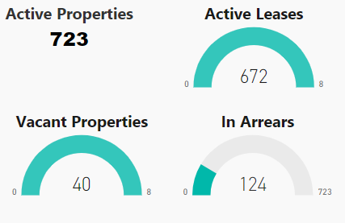
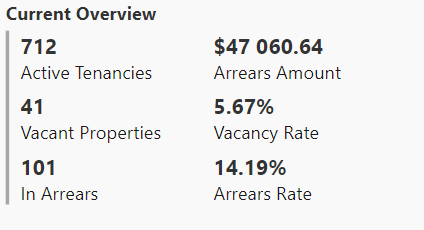
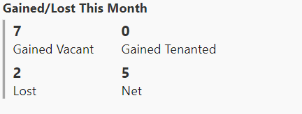

<ion-header>
  <ion-navbar>
    <button ion-button menuToggle>
      <ion-icon name="menu"></ion-icon>
    </button>
    <ion-title>Home</ion-title>
    <ion-buttons end>
      <button ion-button icon-only color="royal" (click)="presentPopover($event)">
        <ion-icon name="people"></ion-icon>
      </button>
    </ion-buttons>
  </ion-navbar>
</ion-header>

<ion-content padding style="background-color: #F9F9F9;" #popoverContent class="popover-page">

  <ion-grid>
    <ion-row>
      <ion-col col-12 col-xl-4 col-lg-4 col-md-6>
        
      </ion-col>
      <ion-col col-12 col-xl-4 col-lg-4 col-md-6>
        
      </ion-col>
      <ion-col col-12 col-xl-4 col-lg-4 col-md-6>
        
      </ion-col>
    </ion-row>
  </ion-grid>

  <div *ngIf="selectedItem">
    <button ion-button outline icon-start small color="danger" (click)="clearFilter()">
      <ion-icon name="remove-circle"></ion-icon>
      Remove "{{selectedItem.title}}" filter
    </button>
  </div>

  <ion-grid>
    <ion-row>
      <ion-col>
        <ion-slides pager style="margin-bottom:35px;" (ionSlideDidChange)="slideChanged($event)">
          <ion-slide *ngFor="let chart of charts; let i = index" (click)="filterChart(chart)" style="cursor: pointer;">

            <page-chart *ngIf="loadedTabs.indexOf(i) > -1" [img]="chart.img"></page-chart>

          </ion-slide>
        </ion-slides>
      </ion-col>

    </ion-row>
  </ion-grid>

</ion-content>